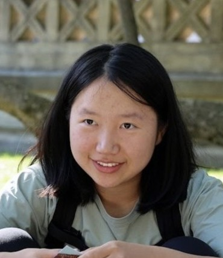
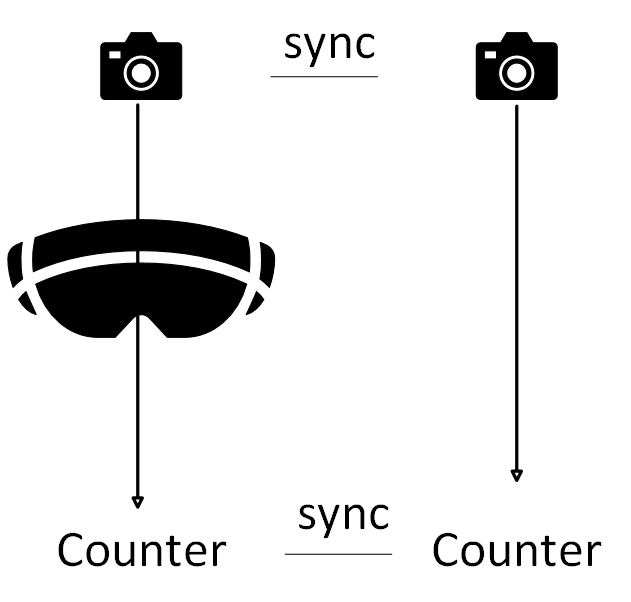
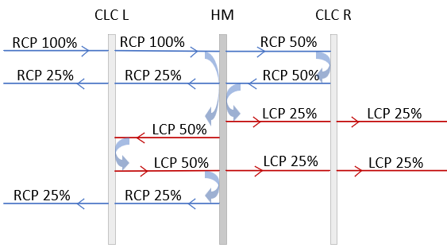
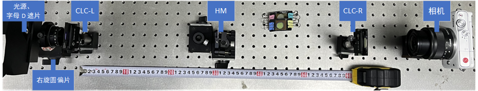
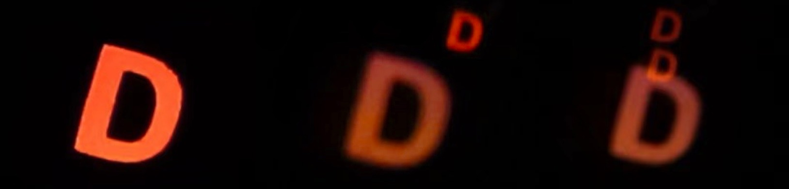

4D Gaussian Splatting
Skills:Python, Docker, Unreal Engine, CUDA, COLMAP
Imagine moving around in a room while multiple cameras capture your motion. With an all-in-one UI and a streamlined pipeline, you simply click, and after a reasonable processing time, you can replay your movements from a novel viewpoint inside a VR headset. This project explores dynamic scene reconstruction using Gaussian Splatting methods.
Learn more →
Photon-to-Photon Latency Measurement System for XR Devices
Skills:Arduino, Raspberry Pi, 3D printing, hands-on prototyping, technical research
Measuring visual latency of VR and AR devices is important for evaluating system performance across different communication methods. However, commercial testing solutions are often expensive. Our system provides a fast, low-cost, adaptive, intuitive, and stable approach for latency measurement.
Learn more →Skills:C#, Unity, HoloLens 2, MRTK3
Imagine planning surveillance camera placements in a space and wanting to evaluate coverage before any physical installation. Instead of costly real-world trial-and-error, users can wear AR headsets and collaborate in a shared environment. Users can draw intended walking routes on a Google 3D map, after which an avatar follows the defined path. They then place, operate, and adjust virtual cameras together. Finally, they observe live simulated camera streams to assess whether the placement sufficiently covers the target walking route and make further adjustments if needed.
Learn more →


High-efficiency Folded Optics for Near-eye Displays
Pancake lens structure offers a promising path to compact near-eye displays, but the use of a half-mirror to triple the optical path length limits the theoretical maximum efficiency to 25%. To reduce power consumption and battery weight, we propose a folded optical structure using two polarization-selective cholesteric liquid-crystal reflectors, achieving 50% optical efficiency with a doubled optical path length.
Learn more →M.Eng. in Virtual Reality and Augmented Reality; GPA: 4.14/5.0
Main Courses: Computer Vision, Image Analysis, Computer Graphics, Virtual Reality, Augmented Reality
B.Eng. in Electronic Science and Technology; GPA: 3.50/4.0
Main Courses: Signals and Systems, Embedded System and Interface, Physics, Electronic Circuits, Principles of Communications
Programming: Python, C++, C#, MATLAB
Professional Tools: Unity, Unreal Engine, Git, Copilot, Docker, Shell, Arduino, OpenCV, ComfyUI, Blender, SolidWorks, AutoCAD, Figma, Altium Designer
Languages: English (Fluent), Mandarin (Native)
I enjoy continuous learning through solving challenging problems. I love breaking complex projects into small, executable, day-by-day tasks, and exploring new technologies and tools. I like taking ownership of my work while also collaborating closely with others.
Outside of study and work, I am passionate about sports and experiencing new things. See more here →